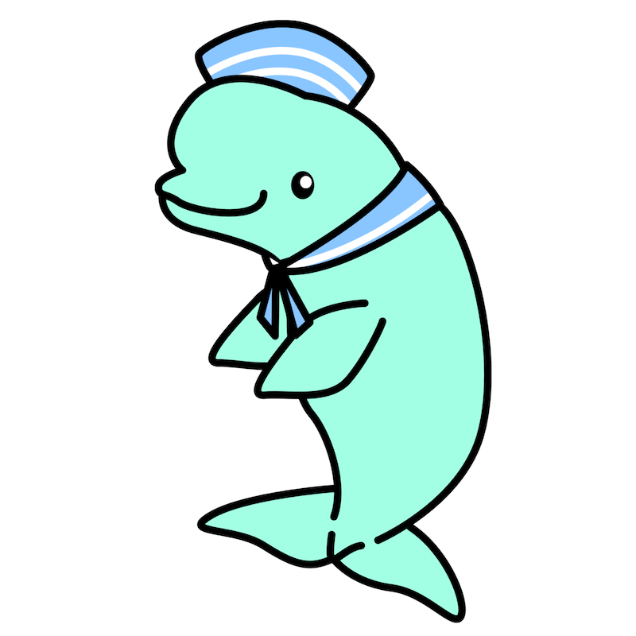

MORE WRITING (AND ART!)
November 3, 2024 - Published
Howdy! I've been preoccupied by various things, but now I've got a lot of stuff to show.
I had a good bit of energy but wasn't sure how to direct it, before realizing that instead of forcing myself to do things I didn't want to do, I could just fully commit to writing stuff that I did want to. So that's what I did!
First is the most major one, another short story about Fidget that features Ube, titled: A Woodworker
NOTE -- If you haven't read the past stories, this requires the context of "Rival Incoming," and by extension, "The View Above the Clouds." You can find both here: https://vecderg.github.io/dragonscavern.html
I've also written 3 articles on my main website! There are 2 opinion articles: Why I Love Esperanto! and Why I'm a Game Genre Purist (Kinda)
And one analysis of Jack Garland (aka the "I want to kill Chaos" guy) and why 1-dimensional characters can totally be cool: Design Analysis: Jack Garland
I did get a brief bit of art motivation that I hope to carry into the rest of the week! First I made a new beluga mascot for Dasopya which you can now see on the main website, who I frankly created because I didn't want my robot mascot to become associated with the recent push for AI in conlang communities. I still plan for both of these lil guys to be co-mascots, but just not today. Here they are side by side, so do lemme know what you think!

Finally, I did a quick drawing for my recent Webfishing spree. As of the time of writing, I have over 30 hours in the game and bought out every store just today! Of course, this meant I had to draw a meme. It has two versions, both of which are available on Bluesky and Itaku, but I'll just be linking one from each. Here's the meme version on Bluesky, and the alt version on Itaku.
Ironically, this is actually a bit of a milestone because it's the first time I've done a non-painting lineless drawing in forever. Unfortunately, I did not put much effort into it LOL
Either way, thank you all for the support as always. I always appreciate it when people enjoy the silly things I put out into the internet. And if I do put this post out as planned on Bluesky, then hi new people!! I hope you all enjoy your time on this website.
Oh! Last note, I added a new RSS icon on the front page which I made from scratch in Inkscape, so I wanted to make it 100% free to use for anyone with or without credit. Here's the raw SVG for your full resolution needs: https://vecderg.github.io/img/rss.svg